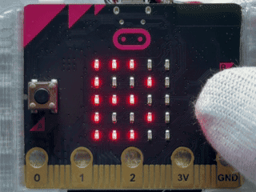
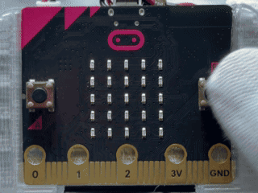
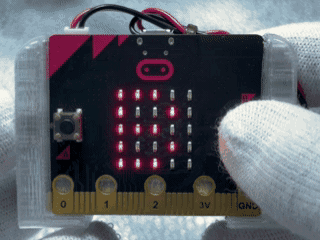
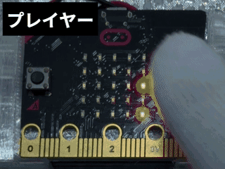
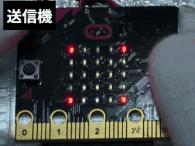
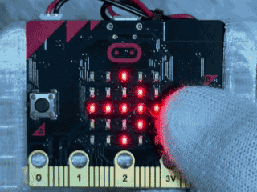
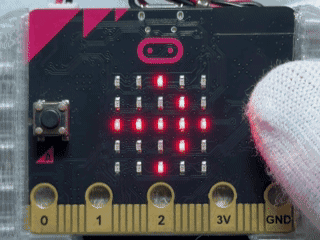

なわとびジャンプゲーム10回ごとスピードアップ なわとびジャンプゲーム10回ごとスピードアップ
このプログラムでは、micro:bitを使って、動くロープに合わせてBボタンでジャンプし、何回つづけられるかにちょうせんするゲームができます。 このプログラムでは、micro:bitを使って、動くロープに合わせてBボタンでジャンプし、何回続けられるかに挑戦するゲームができます。
使い方
- さいしょに「B」と右向きやじるしがこうごにひょうじされる 最初に「B」と右向き矢印が交互に表示される
- Bボタンをおすと、ゲームが始まる Bボタンを押すと、ゲームが始まる
- 「スタート」がカタカナのドット絵でひょうじされる 「スタート」がカタカナのドット絵で表示される
- 画面の真ん中に人がひょうじされ、横一列の光がロープとして動く 画面の真ん中に人が表示され、横一列の光がロープとして動く
- ロープが下に来るタイミングに合わせて、Bボタンをおしてジャンプする ロープが下に来るタイミングに合わせて、Bボタンを押してジャンプする
- うまくジャンプできると、とくてんがふえる うまくジャンプできると、得点が増える
- ジャンプしないままロープが足元に来ると、ゲームが終わる ジャンプしないままロープが足元に来ると、ゲームが終わる
- 10回ジャンプするごとに、ロープの動きが少しずつ速くなる 10回ジャンプするごとに、ロープの動きが少しずつ速くなる
- ゲームが終わると、とくてんがひょうじされる ゲームが終わると、得点が表示される
- とくてんがひょうじされたあと、ふたたび「B」と右向きやじるしがこうごにひょうじされる 得点が表示されたあと、再び「B」と右向き矢印が交互に表示される

ねらい
- タイミングを見てボタンをおす タイミングを見てボタンを押す
- ロープの動きに合わせてジャンプする ロープの動きに合わせてジャンプする
- 回数がふえるほど速くなるゲームのしくみを知る 回数が増えるほど速くなるゲームのしくみを知る
チャレンジ
- ジャンプできる時間の長さをかえて、むずかしさを調整する ジャンプできる時間の長さを変えて、難しさを調整する
- 10回ごとにロープが速くなる大きさをかえる 10回ごとにロープが速くなる大きさを変える
- 友だちとさいこうきろくをくらべて、ランキングを作る 友だちと最高記録を比べて、ランキングを作る
かべよけゲーム10回ごとスピードアップ 壁避けゲーム10回ごとスピードアップ
このプログラムでは、micro:bitを使って、上から近づいてくるかべを左右に動いてよけ、10回よけるごとに速くなるゲームを楽しむことができます。 このプログラムでは、micro:bitを使って、上から近づいてくる壁を左右に動いて避け、10回避けるごとに速くなるゲームを楽しむことができます。
使い方
- さいしょに「B」と右向きやじるしがこうごにひょうじされる 最初に「B」と右向き矢印が交互に表示される
- Bボタンをおすと、ゲームが始まる Bボタンを押すと、ゲームが始まる
- 「スタート」がカタカナのドット絵でひょうじされる 「スタート」がカタカナのドット絵で表示される
- 画面下の光が自分を表し、上から出てくる光の列がかべを表す 画面下の光が自分を表し、上から出てくる光の列が壁を表す
- Aボタンをおすと自分が左へ動き、Bボタンをおすと右へ動く Aボタンを押すと自分が左へ動き、Bボタンを押すと右へ動く
- かべに当たらないように、左右へ動いてよける 壁に当たらないように、左右へ動いて避ける
- A+Bボタンを同時におすと、今までによけたかべの数をかくにんできる A+Bボタンを同時に押すと、今までに避けた壁の数を確認できる
- 10回かべをよけるごとに、かべの動きが少しずつ速くなる 10回壁を避けるごとに、壁の動きが少しずつ速くなる
- かべに当たるとゲームが終わり、よけたかべの数がひょうじされる 壁に当たるとゲームが終わり、避けた壁の数が表示される
- しゅうりょう後はふたたび「B」と右向きやじるしがこうごにひょうじされ、Bボタンをおすともう一度遊べる 終了後は再び「B」と右向き矢印が交互に表示され、Bボタンを押すともう一度遊べる

ねらい
- 上から近づいてくるかべを見て、タイミングよく左右に動く 上から近づいてくる壁を見て、タイミングよく左右に動く
- 自分とかべのいちをくらべて、どちらに動くかを考える 自分と壁の位置を比べて、どちらに動くかを考える
- 回数がふえるほど速くなるゲームのしくみを知る 回数が増えるほど速くなるゲームのしくみを知る
チャレンジ
- 10回ごとにかべが速くなる大きさをかえる 10回ごとに壁が速くなる大きさを変える
- かべが出てくるかんかくをかえて、むずかしさを調整する 壁が出てくる間隔を変えて、難しさを調整する
- 友だちとよけたかべの数をくらべて、ランキングを作る 友だちと避けた壁の数を比べて、ランキングを作る
かたむけゴルフゲーム 傾けゴルフゲーム
このプログラムでは、micro:bitのかそくどセンサーを使って、本体をかたむけてボールを動かし、せいげん時間内にランダムにあらわれるあなへ入れるゴルフゲームができます。 このプログラムでは、micro:bitの加速度センサーを使って、本体を傾けてボールを動かし、制限時間内にランダムに現れる穴へ入れるゴルフゲームができます。
使い方
- さいしょに「B」と右向きやじるしがこうごにひょうじされる 最初に「B」と右向き矢印が交互に表示される
- Bボタンをおすと、「スタート」がカタカナのドット絵で流れたあと、ゲームが始まる Bボタンを押すと、「スタート」がカタカナのドット絵で流れたあと、ゲームが始まる
- 一番上の行がのこり時間を表し、明るい光がボール、うすい光があなを表す 一番上の行が残り時間を表し、明るい光がボール、うすい光が穴を表す
- micro:bitを左右にかたむけると、ボールが左右へ動く micro:bitを左右に傾けると、ボールが左右へ動く
- micro:bitを前後にかたむけると、ボールが上下へ動く micro:bitを前後に傾けると、ボールが上下へ動く
- あなは、4つのドットでできたあな、動かない1つのドットのあな、4つのドットのはんい内を動く1つのドットのあなの中から、ランダムにひょうじされる 穴は、4つのドットでできた穴、動かない1つのドットの穴、4つのドットの範囲内を動く1つのドットの穴の中から、ランダムに表示される
- さいしょのせいげん時間は10秒で、上の5つのLEDがのこり時間の目安を表す 最初の制限時間は10秒で、上の5つのLEDが残り時間の目安を表す
- せいげん時間が10秒のときは、5つのLEDがそれぞれ2回ずつてんめつして、時間のけいかを知らせる 制限時間が10秒のときは、5つのLEDがそれぞれ2回ずつ点滅して、時間の経過を知らせる
- せいげん時間内にボールをあなへ入れると、チェックマークがひょうじされ、せいこう回数がふえる 制限時間内にボールを穴へ入れると、チェックマークが表示され、成功回数が増える
- 5回せいこうするごとにせいげん時間が1秒ずつ短くなり、さいたんで1秒になる 5回成功するごとに制限時間が1秒ずつ短くなり、最短で1秒になる
- せいげん時間内に入れられないとゲームが終わり、せいこう回数がひょうじされる 制限時間内に入れられないとゲームが終わり、成功回数が表示される
- せいこう回数が3秒間ひょうじされたあと、ふたたび「B」と右向きやじるしがこうごにひょうじされる 成功回数が3秒間表示されたあと、再び「B」と右向き矢印が交互に表示される

ねらい
- かそくどセンサーでかたむきを読み取るしくみを知る 加速度センサーで傾きを読み取るしくみを知る
- ボールとあなのいちを見くらべてそうさする ボールと穴の位置を見比べて操作する
- 時間内にあなへ入れられるように、かたむける方向や大きさをくふうする 時間内に穴へ入れられるように、傾ける方向や大きさを工夫する
チャレンジ
- あなのしゅるいを、4つのドットのあなだけや1つのドットのあなだけにかえる 穴の種類を、4つのドットの穴だけや1つのドットの穴だけに変える
- せいげん時間の短くなり方をかえて、むずかしさを調整する 制限時間の短くなり方を変えて、難しさを調整する
- 友だちとせいこう回数をくらべて、さいこうきろくにちょうせんする 友だちと成功回数を比べて、最高記録に挑戦する
クイズ早おしバトル（ホスト／プレイヤーきりかえたいおう） クイズ早押しバトル（ホスト／プレイヤー切替対応）
このプログラムでは、micro:bitのむせんつうしんきのうを使って、ホストとプレイヤーに分かれ、ふくすう人でクイズの早おし対決を楽しむことができます。 このプログラムでは、micro:bitの無線通信機能を使って、ホストとプレイヤーに分かれ、複数人でクイズの早押し対決を楽しむことができます。
使い方
- 起動すると、カタカナの「ホスト」が横スクロールでひょうじされる 起動すると、カタカナの「ホスト」が横スクロールで表示される
- Aボタンをおすと「ホスト」と「プレイヤー」のひょうじが切りかわる Aボタンを押すと「ホスト」と「プレイヤー」の表示が切り替わる
- Bボタンをおすと、ひょうじされているやくわりが決定される Bボタンを押すと、表示されている役割が決定される
- ホストをえらぶと四角形、プレイヤーをえらぶと自分の番号と小さな四角形がひょうじされる ホストを選ぶと四角形、プレイヤーを選ぶと自分の番号と小さな四角形が表示される
- ホストがクイズの問題を出し、Bボタンをおすと早おしうけつけが始まる ホストがクイズの問題を出し、Bボタンを押すと早押し受付が始まる
- プレイヤーの画面にまとのマークがひょうじされたら、Bボタンで早おしできる プレイヤーの画面に的のマークが表示されたら、Bボタンで早押しできる
- さいしょにBボタンをおしたプレイヤーの番号がホストの画面にひょうじされる 最初にBボタンを押したプレイヤーの番号がホストの画面に表示される
- さいしょにおしたプレイヤーにはえがお、ほかのプレイヤーには悲しい顔がひょうじされる 最初に押したプレイヤーには笑顔、ほかのプレイヤーには悲しい顔が表示される
- ホストがふたたびBボタンをおすと、次の問題の早おしうけつけが始まる ホストが再びBボタンを押すと、次の問題の早押し受付が始まる
- AボタンとBボタンを同時におすとやくわりせんたく画面にもどり、やくわりをへんこうできる AボタンとBボタンを同時に押すと役割選択画面に戻り、役割を変更できる

ねらい
- むせんつうしんを使ってふくすうのmicro:bitをつなぐ仕組みを学ぶ 無線通信を使って複数のmicro:bitをつなぐ仕組みを学ぶ
- ホストとプレイヤーのやくわりのちがいをりかいする ホストとプレイヤーの役割の違いを理解する
- じょうけんぶんきを使ってさいしょにおした人だけをはんていする仕組みを学ぶ 条件分岐を使って最初に押した人だけを判定する仕組みを学ぶ
チャレンジ
- せいかいしたプレイヤーにとくてんが入る仕組みをついか 正解したプレイヤーに得点が入る仕組みを追加
- ホストがせいかいとふせいかいをはんていできるきのうをついか ホストが正解と不正解を判定できる機能を追加
- 早おししたじゅんばんをきろくしてランキングをひょうじ 早押しした順番を記録してランキングを表示
モールスしんごうでひみつのつうしん モールス信号で秘密の通信
このプログラムでは、micro:bitを使って、モールスしんごうをアルファベットや数字にへんかんし、2台のmicro:bitでむせんつうしんを楽しむことができます。 このプログラムでは、micro:bitを使って、モールス信号をアルファベットや数字に変換し、2台のmicro:bitで無線通信を楽しむことができます。
使い方
- 起動すると画面の四すみがてんめつし、つうしんできるじょうたいになる 起動すると画面の四隅が点滅し、通信できる状態になる
- Aボタンで「トン（・）」、Bボタンで「ツー（－）」を入力する Aボタンで「トン（・）」、Bボタンで「ツー（－）」を入力する
- 入力したしんごうは画面の下がわに左からじゅんばんにひょうじされ、トンは短い光、ツーはたてに長い光でかくにんできる 入力した信号は画面の下側に左から順番に表示され、トンは短い光、ツーは縦に長い光で確認できる
- AボタンとBボタンを同時におすと、入力したモールスしんごうがアルファベットや数字にへんかんされ、画面にひょうじされると同時に相手のmicro:bitへそうしんされる AボタンとBボタンを同時に押すと、入力したモールス信号がアルファベットや数字に変換され、画面に表示されると同時に相手のmicro:bitへ送信される
- Bボタンを3秒間長おしすると、入力中のしんごうを取り消せる Bボタンを3秒間長押しすると、入力中の信号を取り消せる
- 相手から文字がとどくと、小さな「＋」がひょうじされたあと、じゅしんした文字がやく3秒間ひょうじされる 相手から文字が届くと、小さな「＋」が表示されたあと、受信した文字が約3秒間表示される
- 2台のmicro:bitに同じプログラムを書きこみ、むせんグループを「1」にそろえると、おたがいに文字を送り合える 2台のmicro:bitに同じプログラムを書き込み、無線グループを「1」にそろえると、お互いに文字を送り合える

ねらい
- トンとツーの組み合わせで文字を表すモールスしんごうの仕組みを学ぶ トンとツーの組み合わせで文字を表すモールス信号の仕組みを学ぶ
- じょうほうを文字にへんかんするふごう化の仕組みをたいけんする 情報を文字に変換する符号化の仕組みを体験する
- むせんつうしんを使ってじょうほうを送じゅしんする仕組みをりかいする 無線通信を使って情報を送受信する仕組みを理解する
- 相手に正しくつたえるためにしんごうの組み合わせを考える力を育てる 相手に正しく伝えるために信号の組み合わせを考える力を育てる
チャレンジ
- じゅしんした文字のひょうじ時間を長くしたり短くしたりする 受信した文字の表示時間を長くしたり短くしたりする
- じゅしんした文字をためて、たんごとしてまとめてひょうじする仕組みをついか 受信した文字をためて、単語としてまとめて表示する仕組みを追加
- カタカナのドット絵を使って日本語の文字も送れるようにかいぞう カタカナのドット絵を使って日本語の文字も送れるように改造
- むせんグループ番号をへんこうして、べつのグループとつうしんできるようにする 無線グループ番号を変更して、別のグループと通信できるようにする
- モールスしんごうの一覧表を使わずに、友だちとひみつのメッセージこうかんにちょうせん モールス信号の一覧表を使わずに、友だちと秘密のメッセージ交換に挑戦
ほういでタカラさがしチャレンジ 方位でタカラさがしチャレンジ
このプログラムでは、micro:bitのほういセンサーとかそくどセンサーを使って、じっさいに歩きながらたからの場所をさがすゲームを楽しむことができます。 このプログラムでは、micro:bitの方位センサーと加速度センサーを使って、実際に歩きながら宝の場所を探すゲームを楽しむことができます。
使い方
- 起動するとほういセンサーの調整が始まる。画面のあんないに合わせてmicro:bitをかたむけたり回したりして、画面の点を動かし、すべてのLEDをてんとうさせる 起動すると方位センサーの調整が始まる。画面の案内に合わせてmicro:bitを傾けたり回したりして、画面の点を動かし、すべてのLEDを点灯させる
- 調整が終わると北をさがす画面になり、やじるしを見ながらmicro:bitを水平に持って体ごと向きをかえる 調整が終わると北を探す画面になり、矢印を見ながらmicro:bitを水平に持って体ごと向きを変える
- micro:bitの上がわを北に向けると「✓」がひょうじされ、Bボタンをおすとゲームが始まる micro:bitの上側を北に向けると「✓」が表示され、Bボタンを押すとゲームが始まる
- 5×5マスの中央に自分のいち、ランダムな場所にたからのいちが1秒間ひょうじされる 5×5マスの中央に自分の位置、ランダムな場所に宝の位置が1秒間表示される
- そのあと、たからがある方向をしめすやじるしがひょうじされる そのあと、宝がある方向を示す矢印が表示される
- micro:bitの上がわに「↑」がひょうじされる方向をさがし、本体だけでなく自分の体もその方向へ向ける micro:bitの上側に「↑」が表示される方向を探し、本体だけでなく自分の体もその方向へ向ける
- 「↑」がひょうじされた方向へじっさいに1歩歩くと、向いている方角に自分のいちが1マスいどうする 「↑」が表示された方向へ実際に1歩歩くと、向いている方角に自分の位置が1マス移動する
- Aボタンをおすと、げんざい地とたからのいちを2秒間かくにんできる。げんざい地はてんとう、たからはてんめつでひょうじされる Aボタンを押すと、現在地と宝の位置を2秒間確認できる。現在地は点灯、宝は点滅で表示される
- たからのいちにとうちゃくすると「○」がひょうじされる 宝の位置に到着すると「○」が表示される
- たからの場所からさらに歩いてはなれると「○」が消え、もどるためのやじるしがひょうじされる 宝の場所からさらに歩いて離れると「○」が消え、戻るための矢印が表示される
- 「○」がひょうじされているときにBボタンをおすと、カタカナの「タカラ」とたから箱が開くアニメーションがひょうじされる 「○」が表示されているときにBボタンを押すと、カタカナの「タカラ」と宝箱が開くアニメーションが表示される
- アニメーションが終わると、さいしょの北をさがす画面にもどり、もう一度ちょうせんできる アニメーションが終わると、最初の北を探す画面に戻り、もう一度挑戦できる
- AボタンとBボタンを同時におすと、ゲームをリセットして北をさがす画面にもどれる AボタンとBボタンを同時に押すと、ゲームをリセットして北を探す画面に戻れる

ねらい
- ほういセンサーを使って東西南北の方向を調べるたいけん 方位センサーを使って東西南北の方向を調べる体験
- かそくどセンサーで歩く動きをけんしゅつする仕組みを学ぶ 加速度センサーで歩く動きを検出する仕組みを学ぶ
- 地図とげんざい地のかんけいをりかいし、もくてきちまでの道じゅんを考える力を育てる 地図と現在地の関係を理解し、目的地までの道順を考える力を育てる
チャレンジ
- 歩行をけんしゅつする感度を調整して、1歩ずつ正しく数えられるようにする 歩行を検出する感度を調整して、1歩ずつ正しく数えられるようにする
- たからにとうちゃくするまでの歩数をきろくしてひょうじするきのうをついか 宝に到着するまでの歩数を記録して表示する機能を追加
- せいげん時間をついかして、時間内にたからをさがすゲームにかいぞう 制限時間を追加して、時間内に宝を探すゲームに改造
ハロウィンおばけキャッチ ハロウィンおばけキャッチ
このプログラムでは、micro:bitを使って、コウモリとガイコツを見分けながら、10秒間で高とくてんを目指すハロウィンゲームを楽しむことができます。 このプログラムでは、micro:bitを使って、コウモリとガイコツを見分けながら、10秒間で高得点を目指すハロウィンゲームを楽しむことができます。
使い方
- さいしょに「B」と「→」がこうごにひょうじされる 最初に「B」と「→」が交互に表示される
- Bボタンをおすと、3、2、1のカウントダウンが始まる Bボタンを押すと、3、2、1のカウントダウンが始まる
- カウントダウン中にBボタンをおしてもはんのうしない カウントダウン中にBボタンを押しても反応しない
- ゲームが始まると、コウモリとガイコツがランダムなタイミングで0.7秒間ひょうじされる ゲームが始まると、コウモリとガイコツがランダムなタイミングで0.7秒間表示される
- ガイコツがひょうじされているときにBボタンをおすと「✓」がひょうじされ、1点ふえる ガイコツが表示されているときにBボタンを押すと「✓」が表示され、1点増える
- コウモリがひょうじされているときや、何もひょうじされていないときにBボタンをおすと「×」がひょうじされ、1点へる。ただし0点より下にはならない コウモリが表示されているときや、何も表示されていないときにBボタンを押すと「×」が表示され、1点減る。ただし0点より下にはならない
- 10秒たつとゲームがしゅうりょうし、とくてんがひょうじされる 10秒経つとゲームが終了し、得点が表示される
- 0点ならミニカボチャ、1〜4点ならカボチャ、5点いじょうならレアなジャックオーランタンがひょうじされる 0点ならミニカボチャ、1〜4点ならカボチャ、5点以上ならレアなジャックオーランタンが表示される
- けっかが2秒間ひょうじされたあと、ふたたび「B」と「→」がこうごにひょうじされ、何度でもちょうせんできる 結果が2秒間表示されたあと、再び「B」と「→」が交互に表示され、何度でも挑戦できる

ねらい
- コウモリとガイコツのちがいを見分けるかんさつ力を育てる コウモリとガイコツの違いを見分ける観察力を育てる
- すばやくはんだんしてボタンをおすはんしゃしんけいをやしなう 素早く判断してボタンを押す反射神経を養う
- じょうけんぶんきやらんすうを使ったゲームの仕組みを学ぶ 条件分岐や乱数を使ったゲームの仕組みを学ぶ
チャレンジ
- キャラクターのひょうじ時間をかえてなんい度を調整 キャラクターの表示時間を変えて難易度を調整
- せいげん時間を15秒や20秒にへんこう 制限時間を15秒や20秒に変更
- れんぞくせいかいでボーナス点が入る仕組みをついか 連続正解でボーナス点が入る仕組みを追加
本情報の内容 (添付文書、リンク先などを含む) は、 作成日時点でのものであり、 予告なく変更される場合があります。